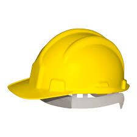
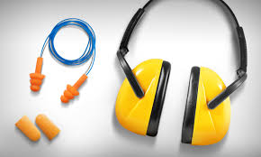
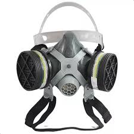
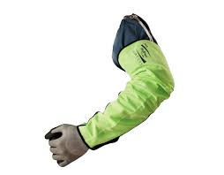
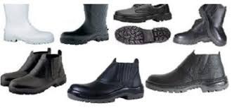
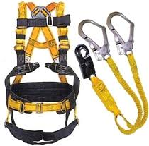

| NOME | EPI | FUNÇÃO |
| CAPACETE |  | Proteção da cabeça do trabalhador contra impactos causados por quedas de materiais, batidas e, dependendo do modelo, até mesmo contra choques elétricos. |
| ÓCULOS E VISEIRA | Minimizar os riscos de lesões oculares causadas por impactos, partículas, respingos químicos e radiação. | |
| ABAFADORES DE RUIDOS E PROTETORES AURICULARES |  | Equipamentos de proteção auditiva projetados para reduzir a exposição a níveis elevados de som e, consequentemente, evitar danos à audição. |
| MÁSCARAS E FILTRO |  | Servem como filtro para evitar a inalação de substâncias tóxicas, fumaças, poeiras e gases que podem causar danos à saúde. |
| LUVAS E MANGOTES |  | As luvas e os mangotes têm a função de proteger a pele do trabalhador contra cortes, contato com produtos químicos, mudanças de temperatura, entre outras adversidades. |
| SAPATOS, BOTAS E BOTINAS |  | São EPIs destinadas à segurança dos pés e tornozelos de seu colaborador. |
| CINTOS E CINTURÕES DE SEGURANÇA |  | Garantir a segurança física dos trabalhadores que atuam com Trabalho em Altura. |